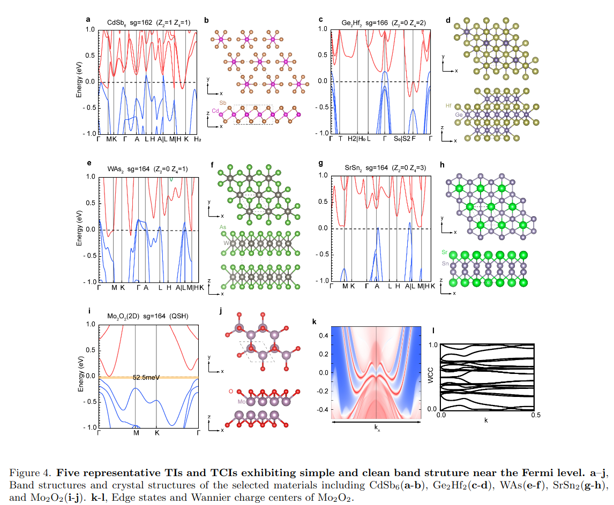

通过强化学习微调生成模型，使得生成的拓扑绝缘体和拓扑材料结构准确率上升。
Reference: * Design Topological Materials by Reinforcement Fine-Tuned Generative Model
使用生成模型生成材料，其中有一些基本的问题： 1. 使用的是什么模型？ 2. 输入和输出是什么？ 3. 数据如何得到以及数据规模大小？ 4. 强化学习的reward是什么？ 5. 通过哪些实验指标说明有效性？
数据集
这篇文章采用了两种数据集： 文献Con-CDVAE: A method for the conditional generation of crystal structures数据集Topological Crystals Database，该项目的代码仓库。
文献A generative model for inorganic materials design数据集和代码链接Alex-MP datasets。
模型
采用模型SPACE GROUP CONSTRAINED CRYSTAL GENERATION，代码地址DiffCSP-PP。
输入信息： 1
2
3
4
5{
"spacegroup_number": 58,
"wyckoff_letters": ["2a","2d","4g"],
"atom_types": ["Mn","Li","O"]
}
Workflow
使用生成扩散过程，逐步还原最初的模型。并且，为了增强正确率，结合PPO算法：
$$ J^{\mathrm{off}}(\theta)=\mathbb{E}_{\tau\sim p_{\theta^{\prime}}}\left[\sum_{t=1}^{T}\frac{p_{\theta}({\mathcal{M}}_{t-1}|{\mathcal{M}}_{t})}{p_{\theta^{\prime}}({\mathcal{M}}_{t-1}|{\mathcal{M}}_{t})}r({\mathcal{M}}_{0})\right] $$
Result
